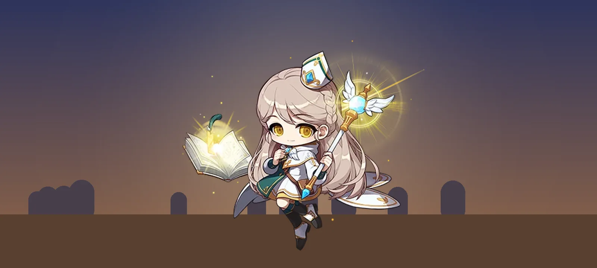
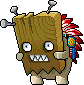
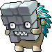
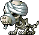
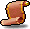

อัปเดต Grand Launch: Excavation Site แมพใหม่ฝั่ง Perion และบอส Stumpy
Grand Launch เพิ่มพื้นที่ใหม่ Excavation Site ให้ Perion มีมอน 8 ชนิดตั้งแต่ Lv.19 ถึง 73 และเพิ่ม Stumpy เป็นบอสตัวที่ 6 ช่วงแรกของบทความสรุปว่ามีอะไรเพิ่มเข้ามา ช่วงหลังดูว่าแต่ละอาชีพได้อะไรจากแมพนี้

ตารางของดรอปแสดงราคาล่าสุดจากตลาดโดยอัตโนมัติ ไอเทมที่ยังไม่มีคนซื้อขายจะขึ้นว่ายังไม่มีข้อมูล ก่อนซื้อหรือขาย แนะนำให้เช็กราคาที่ meso.watch เป็นหลัก แล้วเปรียบเทียบกับประกาศอื่นก่อนตัดสินใจ
Excavation Site เป็นพื้นที่ใหม่ของ Perion ที่ Nexon ประกาศใน Release Notes ของ Grand Launch ด้านหน้าเป็นแมพขุดค้นที่มี Ghost Stump และหน้ากากไม้กับหน้ากากหินสำหรับช่วง Lv.20 ต้น ๆ ด้านในเป็นสุสาน Remains <Tomb> ที่มีสุนัขโครงกระดูกและทหารโครงกระดูกสำหรับช่วง Lv.44–73 มอน 5 ชนิดในสุสานเป็นผีดิบทั้งหมด Cleric จึงเป็นอาชีพที่ได้ประโยชน์ชัดที่สุด
ที่มาของข้อมูล: เลเวล HP EXP ธาตุ และ ACC มาจาก MeowDB ซึ่งเป็นฐานข้อมูลของ Classic World ส่วนชื่อแมพ ทางเดิน และ QUEST มาจากฐานข้อมูลของ Artale เนื่องจากตอนเขียน MeowDB ยังไม่มีข้อมูลแมพของพื้นที่นี้ ของดรอปเป็นรายการอ้างอิงจาก MapleSEA ยุคก่อน Big Bang ซึ่ง MeowDB ระบุว่า Classic World น่าจะใช้เป็นฐาน ข้อมูลส่วนนี้จึงยังต้องรอผู้เล่นยืนยันในเกม
สรุปอัปเดต: มีอะไรใหม่
- Excavation Site พื้นที่ใหม่ของ Perion มีมอน 8 ชนิด ได้แก่ Ghost Stump, Wooden Mask, Rocky Mask, Skeledog, Mummydog, Skeleton Soldier, Officer Skeleton และ Commander Skeleton
- Stumpy เป็นบอสตัวที่ 6 บอสที่เปิดให้ลงตอนนี้มี Mano, Stumpy, Mushmom, Shade, Zombie Mushmom และ Jr. Balrog
- Kerning City Party Quest เปิดให้ผู้เล่น Lv.21 ขึ้นไป เฉพาะ Channel 3–12
- จำกัดการเทรดของบัญชีใหม่ เทรดได้หลังตัวละครในบัญชีถึง Lv.15 ไปแล้ว 24 ชั่วโมง
- Forgotten Hollow ยังไม่เปิด Nexon แจ้งว่าจะเปิดในเดือนพฤศจิกายน
มอนใหม่ 8 ชนิดและแมพที่อยู่
| มอนสเตอร์ | Lv. | HP / EXP | แมพ (อ้างอิง Artale) | |
|---|---|---|---|---|
| Ghost Stump | 19 | 330 / 33 | Excavation Site I–II | |
 | Wooden Mask | 23 | 500 / 42 | Excavation Site I–III |
 | Rocky Mask | 24 | 600 / 45 | Excavation Site II–III |
| Skeledog · ผีดิบ | 44 | 2,450 / 107 | Remains <Tomb> I–III | |
 | Mummydog · ผีดิบ | 47 | 2,750 / 117 | Remains <Tomb> I–III |
| Skeleton Soldier · ผีดิบ | 57 | 4,600 / 190 | Remains <Tomb> II–III | |
| Officer Skeleton · ผีดิบ | 63 | 7,500 / 240 | Remains <Tomb> IV | |
| Commander Skeleton · ผีดิบ | 73 | 15,300 / 315 | Remains <Tomb> IV |
HP และ EXP จาก MeowDB (Classic World) · ชื่อแมพเต็มขึ้นต้นด้วย Victoria Road: · Artale ระบุ HP ของ Skeleton Soldier เป็น 4,500 และ Officer Skeleton เป็น 7,200 ซึ่งต่างจาก Classic World เล็กน้อย
สำหรับสายโจมตีกายภาพ ค่า ACC ที่ต้องมีเพื่อตีไม่พลาดเมื่อเลเวลเท่ามอน คือ 34 สำหรับมอนกลุ่มแรก 60 สำหรับ Skeledog และ Mummydog 82 สำหรับ Skeleton Soldier และ Officer Skeleton และ 104 สำหรับ Commander Skeleton (คำนวณโดย MeowDB) หากเลเวลต่ำกว่ามอน จะต้องใช้ ACC มากกว่านี้
EXP เทียบ HP: เทียบกับที่เก็บเลเวลเดิม
กราฟด้านล่างเทียบ EXP ที่ได้ต่อ HP ที่ต้องตี โดยใส่มอนเดิมที่ผู้เล่นใช้เก็บเลเวลในช่วงเดียวกันไว้ด้วย สุนัขโครงกระดูกให้ค่าต่ำกว่า Zombie Lupin และ Wraith เล็กน้อย ส่วนหน้ากากทั้งสองชนิดใกล้เคียงกับ Dark Axe Stump
EXP ต่อ HP 1,000 หน่วย
EXP ÷ HP × 1,000 แถบสีอ่อนคือมอนเดิมที่ใช้เทียบ ยิ่งยาวยิ่งได้ EXP มากเมื่อเทียบกับดาเมจที่ต้องใช้
ที่มา: MeowDB (HP และ EXP ของ Classic World) ต.ค. 2569 · มอนเลเวลสูงกว่ามักมี HP ต่อ EXP สูงขึ้นตามธรรมชาติ ควรดูกราฟนี้ประกอบกับเลเวลและดาเมจของตัวละคร
QUEST ที่ผูกกับ Excavation Site
ข้อมูล QUEST ส่วนนี้มาจาก Artale ซึ่งใช้ชุด QUEST เดียวกับเวอร์ชันต้นฉบับ ถ้า Classic World มีครบ ผู้เล่นจะได้ EXP เพิ่มระหว่างเก็บเลเวล
- Planting Trees (Lv.20, NPC Winston) เก็บ Seedling 54 ชิ้นจาก Ghost Stump ได้ 10,000 EXP และ Red Potion 30 ขวด
- Shawn the Excavator's Request (Lv.25, NPC Winston) เก็บ Wooden Board 5 ชิ้นจาก Wooden Mask และ Slate 5 ชิ้นจาก Rocky Mask ได้ 7,000 EXP
- Eliminate Monsters from the Site (Lv.25, ต่อจากเควสก่อนหน้า) ล่า Wooden Mask 200 ตัวและ Rocky Mask 300 ตัว ได้ 16,000 EXP ยาหลายชนิด และ Scroll สำหรับรองเท้าเพิ่ม Speed 60% กับ Jump 60% อย่างละ 1 แผ่น
- Notice from the Excavation Team (Lv.60, เริ่มที่ The Excavator Board ส่งที่ Shawn) ล่า Skeleton Soldier 200 ตัว Officer Skeleton 100 ตัว และ Commander Skeleton 40 ตัว พร้อมเก็บ Rib 60 ชิ้น Pelvic Bone 40 ชิ้น และ Horse Skull 20 ชิ้น ได้ 50,000 EXP และ Scroll เพิ่มพลังโจมตีอาวุธ 10%
- Eliminate the Skeletons (Lv.60, NPC Muirhat) ล่า Skeleton Soldier และ Officer Skeleton อย่างละ 50 ตัว ได้ 260,000 EXP แต่เป็น QUEST ต่อเนื่องจากชุดเควสล่า Golem ของ Muirhat ซึ่งอยู่ที่ El Nath จึงอาจยังทำไม่ได้จนกว่าจะเปิดพื้นที่นั้น
บอสใหม่: Stumpy
Stumpy เป็นบอส Lv.35 ที่ Nexon เพิ่มเข้ามาใน Grand Launch โดยไม่ได้อยู่ในรายชื่อบอสช่วง Founder's Access ใน Artale บอสตัวนี้เกิดที่ East Rocky Mountain V ทุก 23–30 นาที Stumpy โจมตีผู้เล่นทันทีที่เห็นและฟื้น HP ได้เรื่อย ๆ ผู้เล่นที่ดาเมจยังไม่พอควรไปเป็นปาร์ตี้
- ค่าสถานะ: MeowDB ระบุ HP 7,000 และ EXP 405 ส่วน Artale ระบุ HP 70,000 และ EXP 410 ค่า HP สองแหล่งต่างกันมาก จึงควรรอดูในเกม
- ของดรอปอ้างอิง: อุปกรณ์ Lv.40 สายสีดำ เช่น Dark Cleave, Dark Knuckle และ Dark Pilfer รวมถึง Scroll 60% สำหรับ Cape, Shield และอาวุธมือเดียว ซึ่งอัตราดรอปอ้างอิงสูงกว่ามอนทั่วไปมาก (ราว 1 ใน 769)
ผลกระทบต่อ Cleric: ที่เก็บเลเวลผีดิบยาวถึง Lv.73
MeowDB ระบุว่ามอน 5 ชนิดในสุสานเป็นผีดิบและแพ้ธาตุ Holy ทำให้รับดาเมจ Holy เพิ่ม 25% สกิล Heal จึงตีได้หลายตัวพร้อมกัน และ Holy Arrow ก็ทำดาเมจได้ดีขึ้น
👍 สิ่งที่ได้
ที่เก็บเลเวลผีดิบต่อเนื่องตั้งแต่ Lv.44 ถึง 73 ก่อนหน้านี้ที่เก็บเลเวลผีดิบใน Victoria Island มีสูงสุดแค่ Wraith Lv.48 แมพใหม่จึงต่อช่วงเลเวลให้ยาวขึ้นอีกมาก และช่วยกระจายผู้เล่นออกจากแมพเดิมที่คนแน่น
👎 ข้อจำกัด
EXP ต่อ HP ของสุนัขต่ำกว่าแมพเดิมเล็กน้อย Skeledog และ Mummydog ให้ค่าน้อยกว่า Zombie Lupin และ Wraith ในกราฟ ช่วง Lv.44–50 จึงยังไม่ใช่การอัปเกรดที่ชัดเจน จุดเด่นจริงอยู่ที่ Skeleton Soldier ขึ้นไป
🎯 เหมาะกับใคร
Cleric ที่เก็บเลเวลคนเดียวด้วย Heal และปาร์ตี้ที่มี Cleric ช่วยตีมอนผีดิบ
สำหรับผู้เล่นที่มีไกด์ Cleric: เส้นทางเดิมยังใช้ได้ แมพใหม่เป็นทางเลือกเพิ่มเมื่อแมพเดิมคนเยอะ · อ่านตัวอย่างไกด์ Cleric
ผลกระทบต่อสายเวทอื่น
- Ghost Stump ป้องกันเวทต่ำ P.DEF 40 แต่ M.DEF เพียง 15 สายเวททุกสายจึงตีได้แรงกว่าสายกายภาพ
- Commander Skeleton ต้านธาตุ Ice และไม่รับพิษ I/L Wizard จะทำดาเมจด้วยสกิลน้ำแข็งได้น้อยลง ส่วน F/P Wizard ใช้สกิลพิษไม่ได้ผล ทั้งสองสายจึงควรเลือก Officer Skeleton หรือ Skeleton Soldier แทน
ผลกระทบช่วง Lv.19–25: ทางเลือกใหม่ที่มี QUEST ช่วย
Ghost Stump ให้ EXP ต่อ HP ใกล้เคียง Zombie Mushroom ส่วนหน้ากากทั้งสองชนิดใกล้เคียง Dark Axe Stump ตัวเลข EXP จากการตีจึงไม่ได้ดีกว่าแมพเดิม แต่ระหว่างเก็บเลเวลยังทำ QUEST ได้อีก 33,000 EXP รวมกัน (Planting Trees, Shawn the Excavator's Request และ Eliminate Monsters from the Site) และแมพใหม่ช่วงแรกน่าจะคนน้อยกว่าแมพเดิม
ผลกระทบช่วง Lv.44–73: เหมาะกับปาร์ตี้และสายดาเมจสูง
สำหรับอาชีพอื่นนอกจาก Cleric โครงกระดูกมี HP สูงและ DEF สูง Commander Skeleton มี HP 15,300 และ P.DEF 330 จึงเป็นข้อจำกัดของการเก็บเลเวลคนเดียว แมพนี้เหมาะกับการไปเป็นปาร์ตี้ หรือมาเพื่อทำ QUEST Notice from the Excavation Team และลุ้น Scroll
ของดรอปที่ควรจับตา
รายการด้านล่างเป็นของดรอปอ้างอิงจาก MapleSEA ยุคก่อน Big Bang อัตราดรอปอ้างอิงของ Scroll จากมอนทั่วไปต่ำมาก อยู่ที่ราว 1 ใน 25,000 ถึง 1 ใน 50,000 จึงควรมองเป็นของแถมระหว่างเก็บเลเวลมากกว่าเป้าหมายหลัก
| ไอเทม | มอนที่ดรอป | ราคาล่าสุด | |
|---|---|---|---|
 | Gloves Attack Scroll: Intermediate | Skeleton Soldier, Officer Skeleton, Commander Skeleton | … |
| Claw Attack Scroll: Intermediate | Skeleton Soldier | … | |
 | Mokbi Throwing Stars | Skeledog | … |
| Wand Magic Attack Scroll: Intermediate | Skeleton Soldier | … | |
| Staff Magic Attack Scroll: Intermediate | Rocky Mask, Skeleton Soldier | … | |
| Earring INT Scroll: Intermediate | Rocky Mask, Commander Skeleton | … | |
| Overall Armor LUK Scroll: Intermediate | Commander Skeleton | … | |
| Overall Armor DEX Scroll: Intermediate | Wooden Mask | … | |
| Cape INT Scroll: Intermediate | Wooden Mask, Stumpy | … | |
| Spear Attack Scroll: Intermediate | Rocky Mask, Skeledog | … |
ราคาล่าสุดอัปเดตเมื่อ … · ตัวเลขใหญ่คือราคาซื้อขายทั่วไปช่วง 14 วัน · K = พัน, M = ล้าน · หน่วยราคา meso
กดชื่อไอเทมเพื่อดูรายละเอียดใน MeowDB · เช็กราคาในตลาด: Gloves Attack Scroll · Claw Attack Scroll · Mokbi Throwing Stars
นอกจาก Scroll แล้ว มอนในสุสานยังมีอุปกรณ์ Lv.50–70 ของทุกอาชีพในรายการอ้างอิง เช่น Titan จาก Skeledog, Silver Planet และ Red Infinium Circlet จาก Skeleton Soldier และ Neocora กับ Adamantium Legend Shield จาก Officer Skeleton
สิ่งที่ยังต้องตรวจในเกม
- ทางเข้าและชื่อแมพ จาก Perion ไปยัง Excavation Site และ Remains <Tomb>
- ของดรอปจริง เทียบกับรายการอ้างอิงจาก MapleSEA
- QUEST ทั้ง 5 เรื่อง ว่ามีใน Classic World และให้รางวัลเท่ากันหรือไม่
- HP ของ Stumpy ซึ่งสองฐานข้อมูลระบุไม่ตรงกัน
เมื่อมีข้อมูลจากในเกมเพิ่มเติม บทความนี้จะอัปเดตตามข้อมูลจริง
อยากรู้ว่าแต่ละเลเวลควรไปไหนต่อ?
ไกด์แต่ละอาชีพรวบรวมเส้นทางเก็บเลเวล QUEST และไอเทมที่ควรเก็บไว้ในช่วง Lv.1–50 อ่านช่วงแรกได้ฟรี
อัปเดต: Grand Launch Release Notes (Nexon, 20 ต.ค. 2569) · ค่าสถานะมอน ธาตุ ACC และของดรอปอ้างอิง (MapleSEA ยุคก่อน Big Bang และอัตราจาก OSMLib): MeowDB · ชื่อแมพ QUEST และข้อมูล Stumpy บางส่วน: artalemaplestory.com (ฐานข้อมูลของ Artale ไม่ใช่ Classic World) · ราคาล่าสุด: สรุปราคาตลาดจาก NiaMeowDB ที่ MapleThai อัปเดตทุกวัน · ภาพมอนสเตอร์และไอคอนไอเทม © NEXON (ผ่าน MapleStory.io)